A whole world of shipping
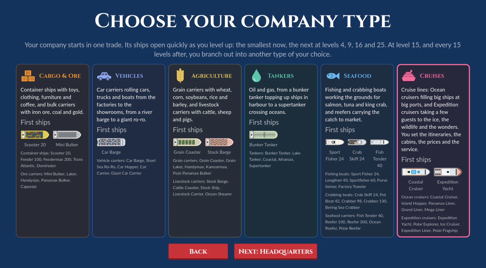
Choose your trade
Every company starts in one trade: Cargo & Ore, Vehicles, Agriculture, Tankers, Seafood or Cruises. Its ships open quickly, the smallest straight away and bigger ones at levels 4, 9, 16 and 25. At level 15, and every 15 levels after, you branch out into another trade of your choice, until you run them all. Then make your company's own logo, from your colours and your trade's mark, to fly at your headquarters and hubs.
Company types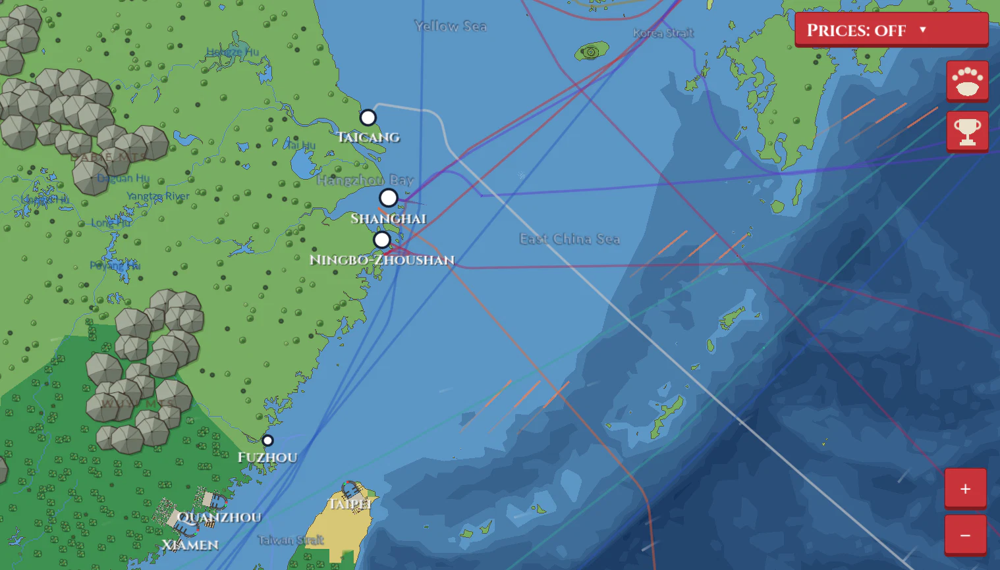
Trade what the world makes
Over 130 goods, from toys, steel and copper ore to coffee, bananas and cattle and the cars and boats of 44 makers, and seventeen kinds of seafood, each cheap where it's really grown, built or caught and expensive where it's needed. Your ships buy low at one port and sell high at the next, and every trade feeds your company's level.
How trading works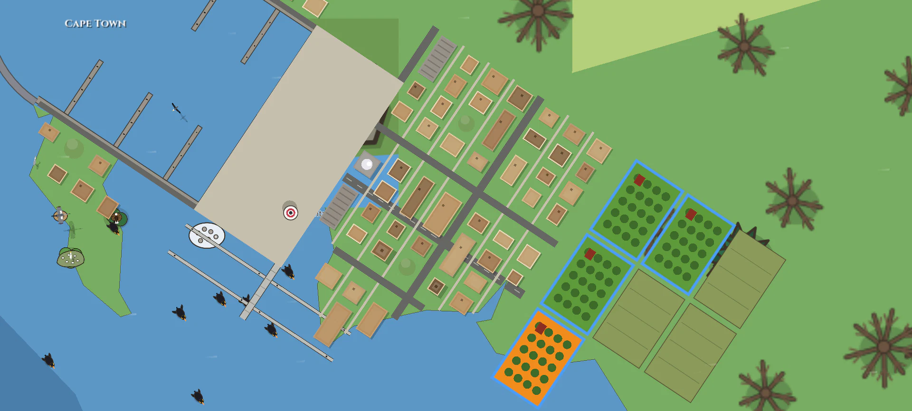
Farm the world
Buy land at 36 farm ports, from the Pampas to the Cape, and grow what the climate suits: apples in Washington, cocoa on the Ivory Coast, tea in Ceylon, oranges in Valencia. Graze Wagyu, Belted Galloways or Valais Blacknose sheep. Harvests come in by the real seasons, and your own ships carry them away free, fresh fruit losing a little value every day at sea. Watch the almanac: a drought or a late frost can take most of a year's crop.
Farms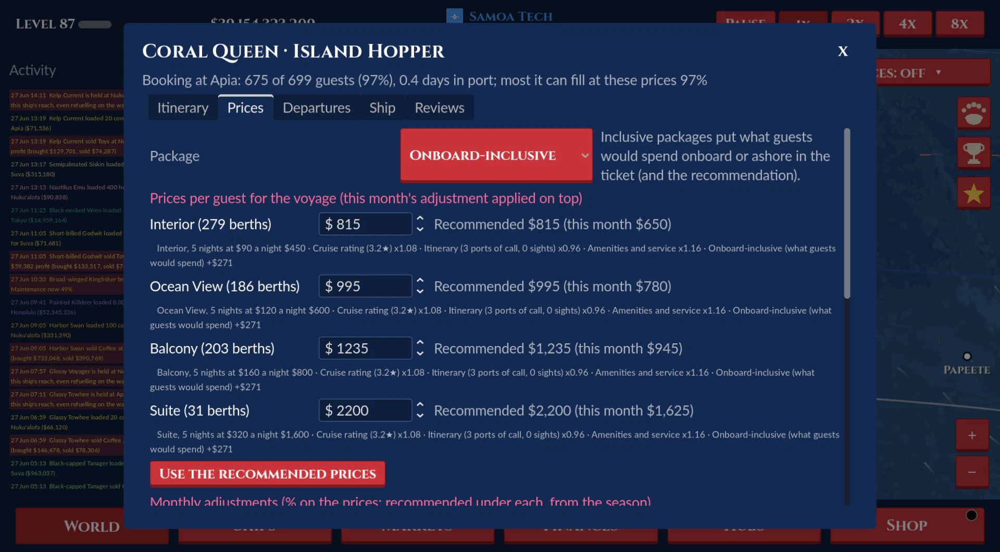
Run a cruise line
Ocean liners for the crowds, ice-class expedition ships for the polar coasts and the wonders of the world. Plan each itinerary, share out the cabins between Interior, Ocean View, Balcony and Suites, fit the decks with pools, theatres and spas, and set your ticket prices month by month, each beside a recommendation that shows everything behind it. Charge too much and the berths stay empty; every voyage that comes home gets its review.
Cruise lines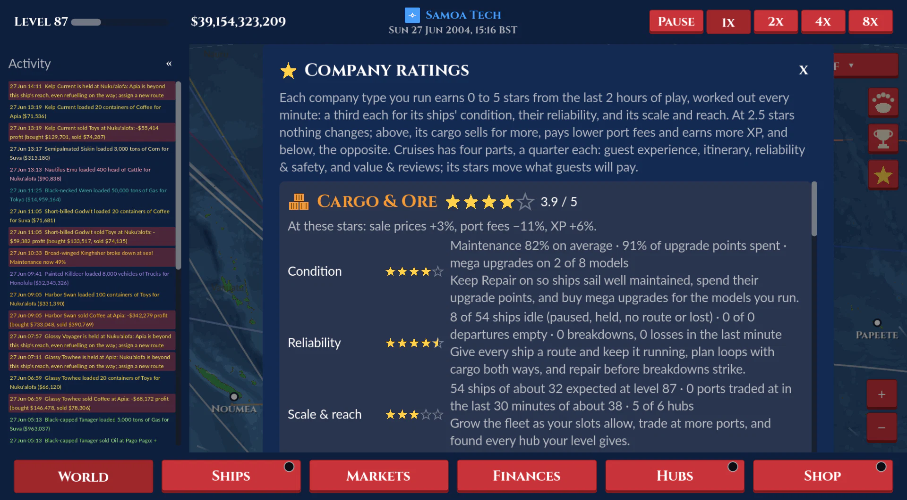
Earn your stars
Every trade you run earns 0 to 5 stars from how well its ships are kept, how reliably they sail and how far they reach, or for a cruise line from its guests' experience, its itineraries and its reviews. Stars bring better prices, lower port fees and more experience, and the Ratings page shows exactly what to improve.
Company ratings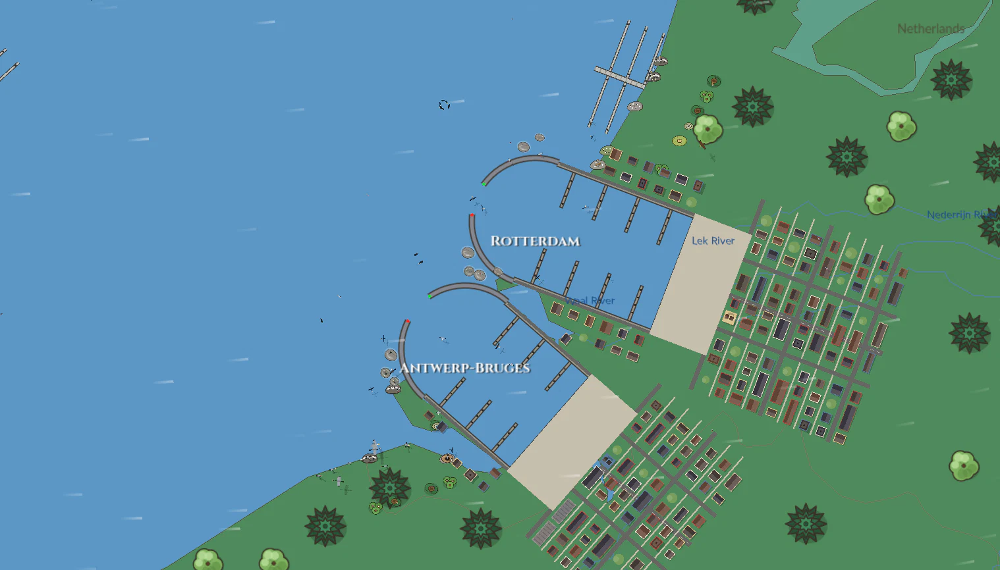
Every port is a working harbour
Zoom in from the whole globe to a single pier. Every port has its own marina with berths, tugs, moorings and a town round it, and ships come in on their own side of the channel, tie up and pull out again.
Explore the world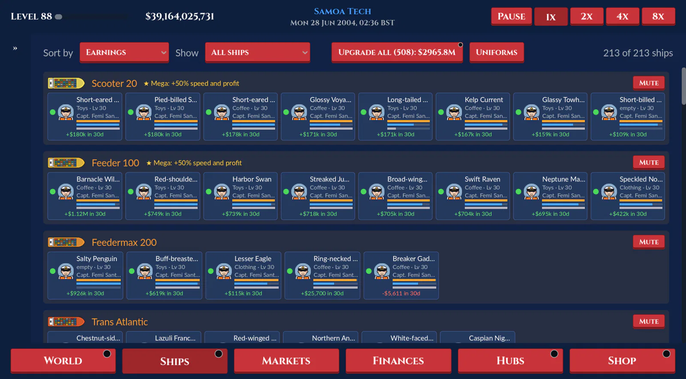
Build your fleet
Seventeen lines of ships with five sizes each, from river barges to supertankers, giant car carriers, semi-submersible yacht carriers, banana boats, factory trawlers and mega liners, plus tugs, icebreakers and recovery boats. Each one has its own captain and crew, burns fuel, wears out and needs a good route to earn its keep. Ports beyond a tank's reach are reached by refuelling at ports on the way, shown on the route as you plan it.
Meet the ships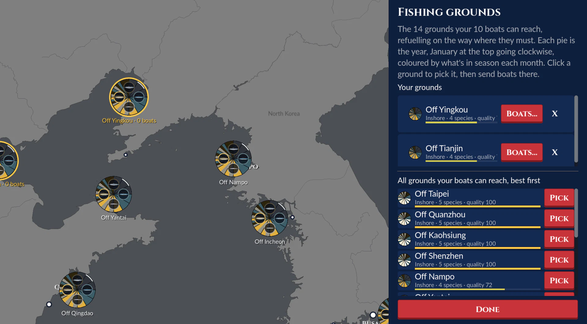
Fish the real seasons
Every fishing ground your boats can reach is a pie of the year, coloured by what's in season each month, with the fish and crabs found there. Pick your grounds, send boats there by model, and choose where they land the catch: sold on the quay, or frozen at your HQ or a hub for your reefers.
Fishing and crabbing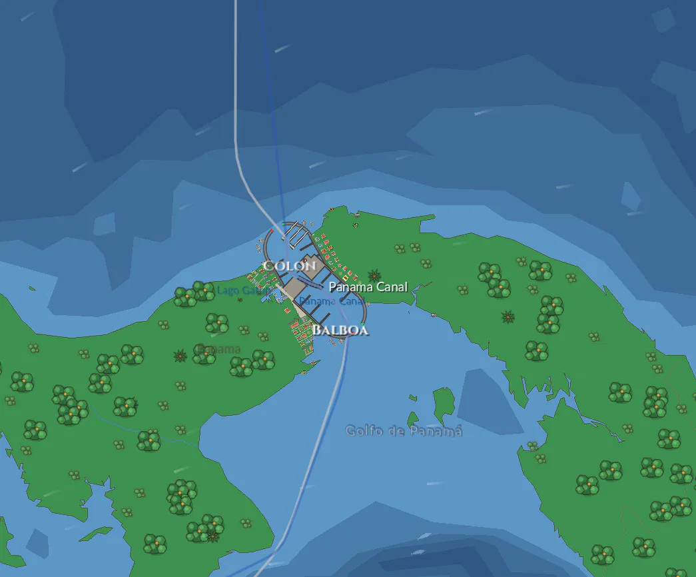
Canals, ice and weather
Queue for the locks at Panama and Suez, push through the Arctic with an icebreaker, ride the ocean currents and ride out the storms. Seasons close the Great Lakes in winter and bring snow to the land.
Sea and sky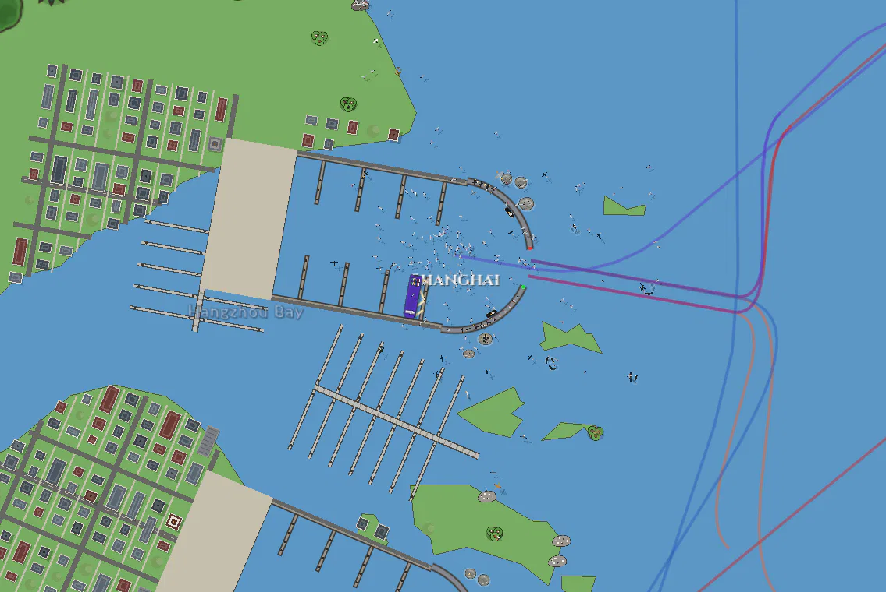
A living sea
Whales, dolphins, sharks, seals and otters swim the oceans, and bird colonies feed round the harbours and follow your ships out to sea, each with its own call.
Wildlife and birds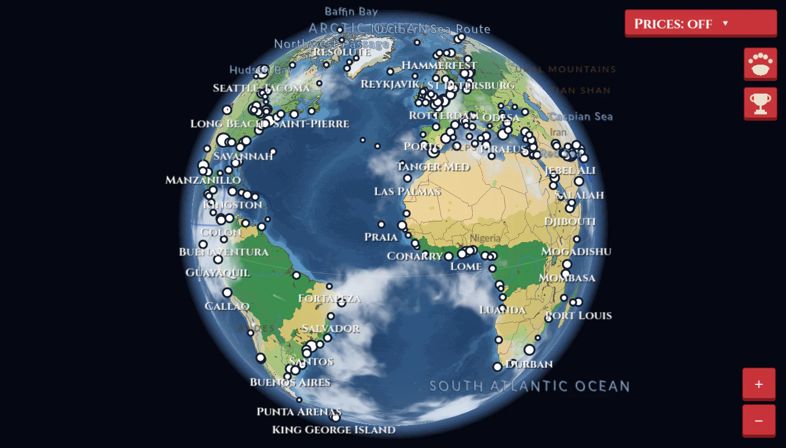
Rivals and friends
Compete with AI shipping companies, or found companies with friends over Steam or your local network. You can even call down storms on your rivals with Divine Actions.
Rivals and multiplayerScreenshots
All taken in the current build of the game.


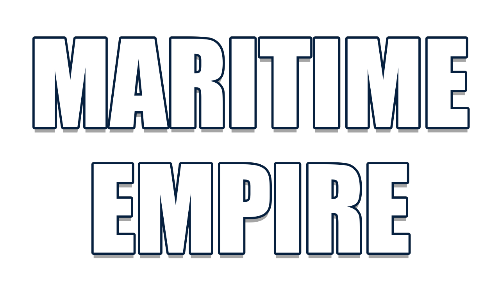
Maritime Empire is in development for Windows.